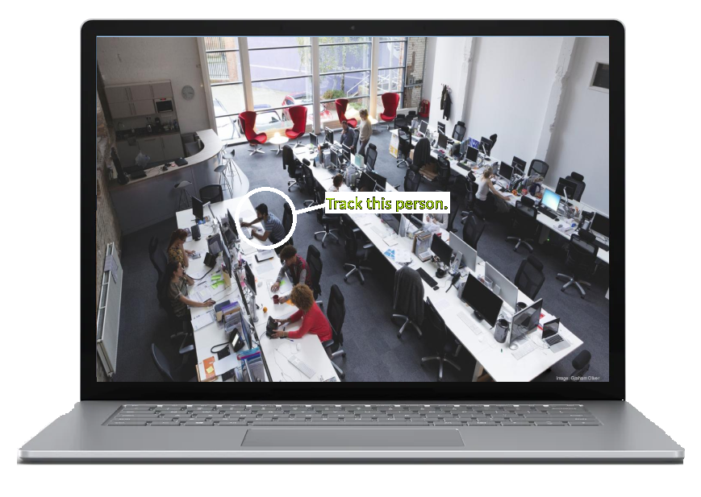

International Students Alzheimer’s Disease Association

AlziAid is a Browser-based program that uses eye tracking to give a quick, accurate, low requirement diagnosis Alzheimer’s Disease. People with limited access to healthcare can use ALziAid as an initial screening to observe AD symptoms and seek professional help.
AlziAid tracks the patient’s eyeball. The user must track a moving object on a screen as closely and precisely as possible to get an accurate diagnosis. Poor eye movements signifies cognitive decline, which is a major symptom for Alzheimer’s disease. This allows us to reliably diagnose AD patients.
We simulate realistic scenarios in daily life to replicate the most natural response.
2023/7/15 Project passed S.T. Yau award selection
2022/9/12 Secondary Schools Software Development Invitational Contest (Senior)
Silver award
2023/10/11 Hong Kong Olympiad in Informatics Senior level
Silver award
2023/4/2 Hong Kong Science & Technology Innovation Competition
FIRST PLACE - Information Technology
2023/6/19 Asia Oceania Geosciences society (AOGS)
Presenter and speaker
2023/8/22 Hong Kong Science Technology park
Participant - Seed Fund startup program
background image for
in-person discussion
here
We will validate the program's diagnostic accuracy on 100 test subjects, not overlapping with the subjects used to build the model. They are equally split between AD patients and healthy control group.
Our Method
supposed to be image with alziaid loaded on it
A Convolutional neural network (CNN) will be used to determine the accuracy of the user's focus on the intended target on a display. We will use this to detect the subtle changes in eye movement.
A Recurrent neural network (RNN) will be used to compute the user's ability to track the office worker's head throughout the testing period, therefore showing the user's responsiveness to objects in motion
A result in the form of two percentages will be reported to the patient.
The former represents the chance of the patient having alzheimer’s, and the latter represents the severity of the patient.
created with
Website Builder Software .